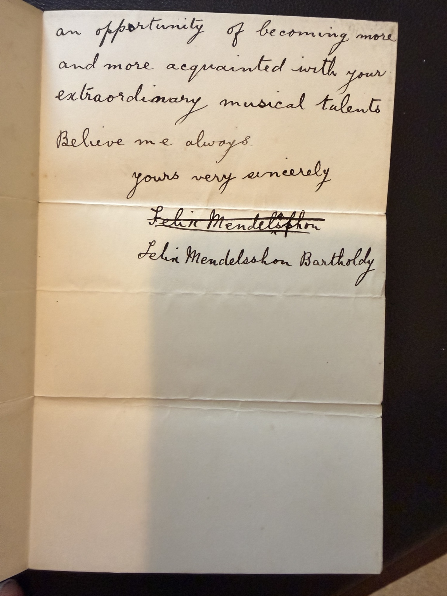
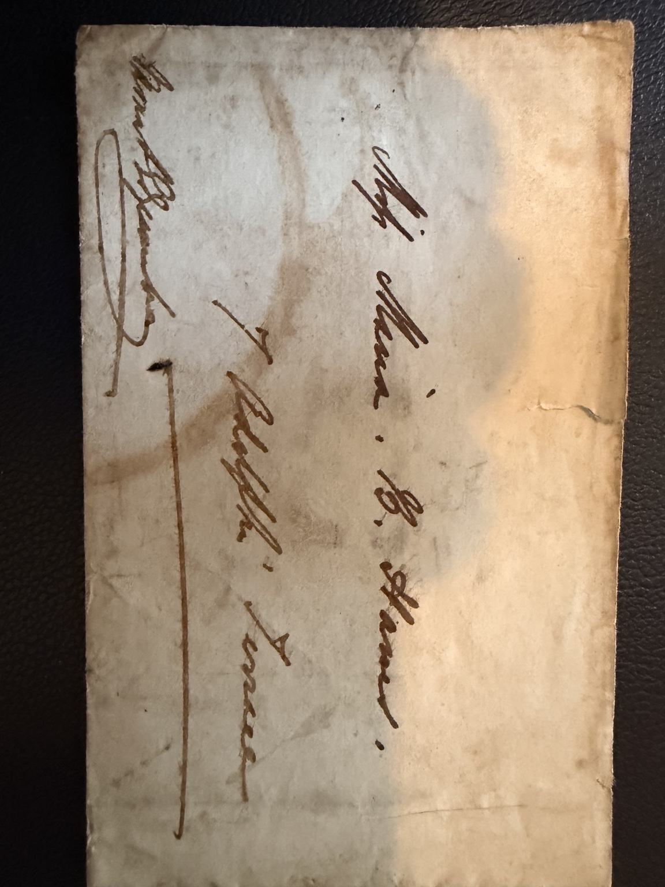

← Maria Billington Hawes biography
Family manuscript collection · correspondence with Maria Billington HawesMendelssohn’s letters to Maria Billington Hawes
The family preserves photographs of two remarkable letters addressed to the contralto Maria Billington Hawes, daughter of the composer William Hawes. One is dated Birmingham, 25 September 1840; the other, 4 Hobart Place, 28 April 1847. Both close with a signature reading Felix Mendelssohn Bartholdy.
About the manuscripts: These four photographs were supplied from the family collection. Both dated letter pages are annotated “Copy”, so the images are presented as family-held manuscript copies of correspondence attributed to Mendelssohn, rather than authenticated autograph originals. The working transcriptions below can be compared directly with the photographs.
1 · Birmingham, 25 September 1840



Address on envelope or folded cover: “Miss Maria B. Hawes / 7 Adelphi Terrace” (reading of the middle initial and street number appears secure). The cover also carries a separate handwritten endorsement.
Birmingham 25 Sept 40
My Dear Madam
Accept my sincere thanks for the songs you so kindly sent me, the perusal of which will afford me a great treat, as the one in C. has done yesterday evening when performed by you in so admirable & masterly a stile. All your performances at this festival will indeed be amongst my most pleasant & delightful recollections and I wish & hope we may soon meet again that I may have an opportunity of becoming more and more acquainted with your extraordinary musical talents.
Believe me always
yours very sincerely
Felix Mendelssohn Bartholdy
This letter follows the 1840 Birmingham Triennial Music Festival, at which Maria appeared and Mendelssohn conducted his Lobgesang (Hymn of Praise) on 23 September. The correspondence mentions songs Maria sent for his perusal and performances at the festival; it does not specify that the “one in C” was from Lobgesang.
2 · Hobart Place, 28 April 1847

My Dear Madam
Many thanks for your kind note & your kind intention with regard to my Elijah. But I must leave this country on the 6th or 7th May at latest, & I hope to meet you on Friday & to tell you in person how much I regret not to be able to stay longer!
always very truly yours
Felix Mendelssohn Bartholdy
4 Hobart Place
28 April 1847.
The photographed letter explicitly refers to “my Elijah”. It was written after the oratorio's first Birmingham performance on 26 August 1846 and shortly before Mendelssohn left England in 1847. The exact nature of Maria's proposed assistance or “kind intention” cannot be determined from this letter alone.
Maria and the original performance of Elijah
The Morgan Library & Museum holds an annotated programme for Mendelssohn's Elijah premiere at the Birmingham Festival on 26 August 1846, listing “Miss M. B. Hawes” among its performers. Frederick George Edwards's The History of Mendelssohn's Oratorio ‘Elijah’ (1896) specifically identifies her as the first singer of “O rest in the Lord”, and describes an original performance copy of the aria with Mendelssohn's alterations.
In a letter of 5 April 1861 to S. W. Martin, preserved at Birmingham City Archives (MS 565/1), Maria, by then Maria B. Merest, recalled that Mendelssohn had been considering removing “O Rest in the Lord” until hearing her sing it at a rehearsal in Moscheles's home. That is Maria's own retrospective account, quoted in academic research; it is not stated in either of the two family-held Mendelssohn letters.
Source inventory


Independent historical references
- Morgan Library & Museum: contemporary signed and annotated Birmingham premiere programme (1846).
- Frederick G. Edwards, The History of Mendelssohn's Oratorio ‘Elijah’ (1896).
- Academic thesis discussing Maria's 5 April 1861 letter, Birmingham City Archives MS 565/1.
- Dictionary of Music and Musicians: Lobgesang performed at Birmingham 23 September 1840.
Holding: Hawes family collection. Manuscript pages and covers should be conserved and photographed under diffuse light without flattening brittle folds.